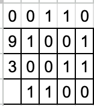

Tá SAMI, esse bit sobrando tava incomodando e eu não sabia onde enfiar ele.
Bom, FINALMENTE voltamos, demorei por motivos de FÉRIAS e ENROLAÇÃO. MAS VOLTEI
Esse post faz parte da série Implementando uma calculadora binária ou um título mais apropriado no futuro.
Antes de mais nada, vamos entender a soma dos bits:
Vamos considerar a soma de dois bits (A e B): Link to heading
0 + 0 = 0
0 + 1 = 1
1 + 0 = 1
1 + 1 = 10 (que é equivalente a 2 em decimal)
Quando somamos dois bits e o resultado é “10” (em binário), temos:
O bit da direita (0) é a soma. O bit da esquerda (1) é o carry-out (ou vai-um), que é transportado para a próxima posição de bits.
A adição de números maiores que um bit envolve o uso do carry-out gerado na soma anterior.
No post anterior realizamos uma soma de bits simples calculando 9 + 3, e tivemos dois valores um da soma e um carry. Mas, logo no segundo bit a ser somado carregamos ainda um carry na soma, o que fazer agora se um meio somador só consegue lidar com dois bits de entrada?
Simples! Precisamos de um somador completo.
Somador completo Link to heading
Um somador completo é basicamente a utilização de dois meio somadores e uma operação OR para o carry-out de cada operação.
- Meio somador 1: Calcula a soma parcial de A e B, e gera um carry-out parcial.
- Meio somador 2: Calcula a soma final com o valor da soma da primeira operação e do bit de carry-in e também gera um carry-out adicional.
- Finalmente, o carry-out total é a combinação dos dois carry-out’s (parcial e adicional).
Se pegarmos agora o segundo bit de 9 (0) e de 3 (1) e aplicarmos o carry-out da soma anterior (1), conseguimos executar a soma:

Logo, poderemos então realizar essa operação para todos os bits da cadeia, ficando assim (o carry fica em cima):

1100 = 12 decimal
- A primeira soma recebe um zero no carry por não ter ocorrido nenhuma soma anterior
Código completo em python:

E aquele carry zero lá em cima do número nove? Link to heading
SPOILER: É a representação das limitações físicas de hoje!
SPOLIER 2: Vamos fazer isso de forma eletrônica usando transistores
AGUARDEM!!!
O código está disponível também no meu Github: https://github.com/SamirGoes/binary-adder